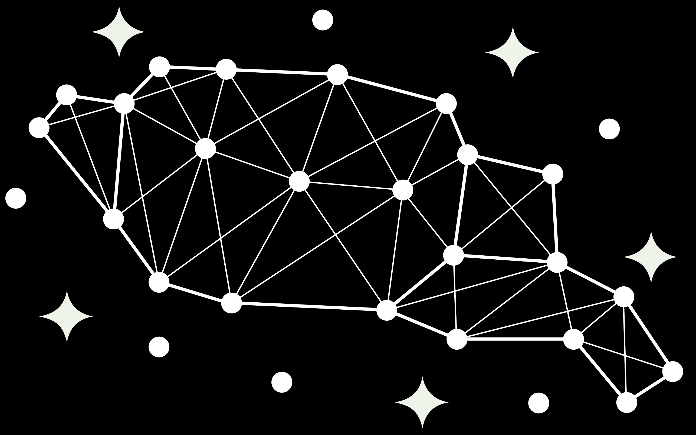

Constellation-inspired neuron tracking across sessions
Release • v1.0.0Stars2Cells is a neuron tracking pipeline for longitudinal calcium imaging experiments. It identifies and matches individual neurons across sessions using geometric relationships rather than relying on a single global alignment.
The method is inspired by astronomical star matching, where constellations are recognized despite rotation, translation, missing points, or partial overlap.
Stars2Cells is designed for multi-session or longitudinal experiments where neuron identity must be preserved across days or conditions.
Common use cases include pre and post intervention studies, drifted fields of view, partial overlap between sessions, and recordings with cell turnover.
Local constellations of four neurons create invariant spatial signatures.
Each quad match votes for neuron pairs, producing robust consensus matches.
Outlier matches are rejected while estimating the global rigid transform.
Residuals, inlier rates, and match confidence scores support inspection.
Stars2Cells is currently an early release. Features, APIs, and documentation may change as the pipeline is validated across datasets.
If you use Stars2Cells, please cite the preprint:
Peden-Asarch AM, Honan LE, Bai JZ, Asarch EM, Quinn JA, Coffey KR, Neumaier JF. Stars2Cells: Astrometric Tracking of Neurons Across Imaging Sessions. bioRxiv, 2026. https://doi.org/10.64898/2026.07.03.736144